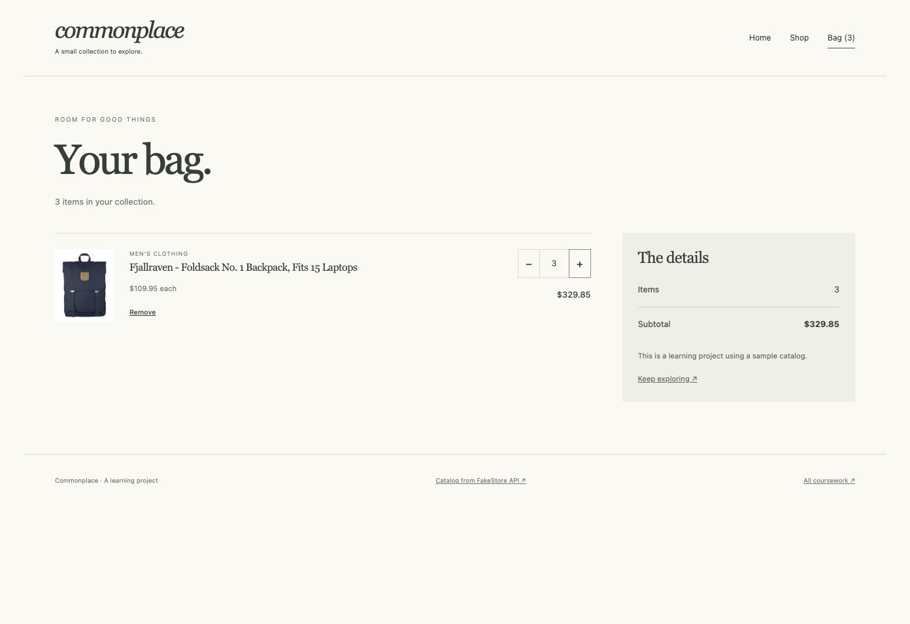

A selection of coursework
Learning by building
I’m Asliddin Tirkashev, a student at RNU (group 4230Z) in Uzbekistan. I’m learning web development by building responsive interfaces, JavaScript applications and server-side projects.
This collection follows The Odin Project curriculum, from accessible HTML and CSS to React, Express and PostgreSQL. Each project is a chance to turn an idea into something useful and test how it works.
Find my code on GitHub ↗View my resume ↗Explore Node.js projects ↗A selection of coursework